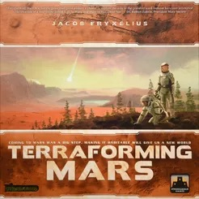
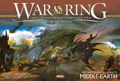
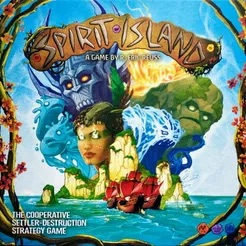

Spil
Hjá Spilabúðinni eigum við öll helstu spilin! Hér eru vinsælustu spilin hjá okkur:
- 1. Brass: Birmingham (2018)
- Build networks, grow industries, and navigate the world of the Industrial Revolution.
- 8.414

- 12000
- 2. Pandemic Legacy: Season 1 (2015)
- Mutating diseases are spreading around the world - can your team save humanity?
- 8.377

- 10000
- 3. Gloomhaven (2017)
- Vanquish monsters with strategic cardplay. Fulfill your quest to leave your legacy!
- 8.349

- 25000
- 4. Ark Nova (2021)
- Plan and build a modern, scientifically managed zoo to support conservation projects.
- 8.335

- 8000
- 5. Twilight Imperium: Fourth Edition (2017)
- Build an intergalactic empire through trade, research, conquest and grand politics.
- 8.239

- 15000
- 6. Dune: Imperium (2020)
- Influence, intrigue, and combat in the universe of Dune.
- 8.23

- 9000
- 7. Terraforming Mars (2016)
- Compete with rival CEOs to make Mars habitable and build your corporate empire.
- 8.21
- 
- 8500
- 8. War of the Ring: Second Edition (2011)
- The Fellowship and the Free Peoples clash with Sauron over the fate of Middle-earth.
- 8.187
- 
- 11000
- 9. Star Wars: Rebellion (2016)
- Strike from your hidden base as the Rebels—or find and destroy it as the Empire.
- 8.17

- 9000
- 10. Gloomhaven: Jaws of the Lion (2020)
- Vanquish monsters with strategic cardplay in a 25-scenario Gloomhaven campaign.
- 8.159

- 10000
- 11. Spirit Island (2017)
- Island Spirits join forces using elemental powers to defend their home from invaders.
- 8.145
- 
- 5000
- 12. Gaia Project (2017)
- Expand, research, upgrade, and settle the galaxy with one of 14 alien species.
- 8.111

- 3000
- 13. Twilight Struggle (2005)
- Relive the Cold War and rewrite history in an epic clash between the USA and USSR.
- 8.066

- 6000
- 14. Through the Ages: A New Story of Civilization (2015)
- Rewrite history as you build up your civilization in this epic card drafting game!
- 8.055

- 8000
- 15. Great Western Trail (2016)
- Use strategic outposts and navigate danger as you herd your cattle to Kansas City.
- 8.022

- 10500